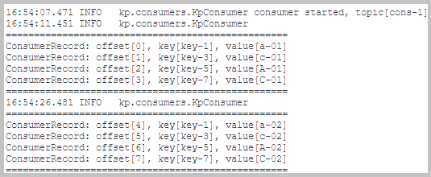
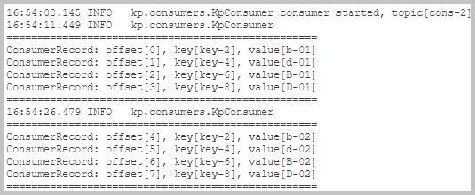

Kafka is an event streaming platform.
Kafka Storage & Processing:
 In the Docker container 'ptc-kafka' runs Kafka Server with single Kafka Broker.
In the Docker container 'ptc-kafka' runs Kafka Server with single Kafka Broker.
The sections of this project:
Java source code. Packages:

 application sources :
kp
application sources :
kp
test sources :
kp.processors
Action:

 1. With batch file
"01 Docker build and run.bat" build the image and
1. With batch file
"01 Docker build and run.bat" build the image and
 start the container with the application.
start the container with the application.
 1.1. Docker image is built using these files:
Dockerfile and
compose.yaml.
1.1. Docker image is built using these files:
Dockerfile and
compose.yaml.
The screenshot of the created Docker containers.
Docker containers for stream processing applications: producer, transformer, and two consumers
2.1. Producer in the container ptc-producer produces to topics 'prod-1' and 'prod-2'.
Sends the 'ProducerRecord' objects with the Kafka client 'KafkaProducer'.
The producer method:
kp.producers.KpProducer::produceRecordsSet.
The log from the container ptc-producer.
2.2. Transformer in the container ptc-transformer directs the records from the producer topics ('prod-1' and 'prod-2') to the consumer topics ('cons-1' and 'cons-2').
The topology method:
kp.processors.KpTransformer::initializeTopology.
The log from the container ptc-transformer.
2.3. Consumer consumes the 'ConsumerRecord' objects with the Kafka client 'KafkaConsumer'.
The consumer method:
kp.consumers.KpConsumer::consumeRecords.
Consumer in the container ptc-consumer-1 consumes from topic 'cons-1'.

The log from the container ptc-consumer-1.
Consumer in the container ptc-consumer-2 consumes from topic 'cons-2'.

The log from the container ptc-consumer-2.
Docker containers for stream processing applications: comparer and counter
3.1. Comparer in the container ptc-comparer compares the records in producer topics with the records in consumer topics:
The topology method: kp.processors.KpComparer::initializeTopology.
The screenshot of the log from the container ptc-comparer.
3.2. Counter in the container ptc-counter counts the records in topics 'prod-1', 'prod-2', 'cons-1', and 'cons-2'.
The topology method:
kp.processors.KpCounter::initializeTopology.
The screenshot of the log from the container ptc-counter.
Back to the top of the pageAction:
1. With batch file
"02 Kafka list topics.bat" run in Docker the Kafka script for topic listing.
2. With batch file
"03 Kafka consume.bat" run in Docker the Kafka consumer console on topic 'cons-1'.
4.1. The batch file "02 Kafka list topics.bat".
The
screenshot of the console log from the run of the batch file "02 Kafka list topics.bat".
4.2. The batch file "03 Kafka consume.bat".
The console log from the run of the batch file "03 Kafka consume.bat".


{kind=link}
{kind=link}
{kind=link}